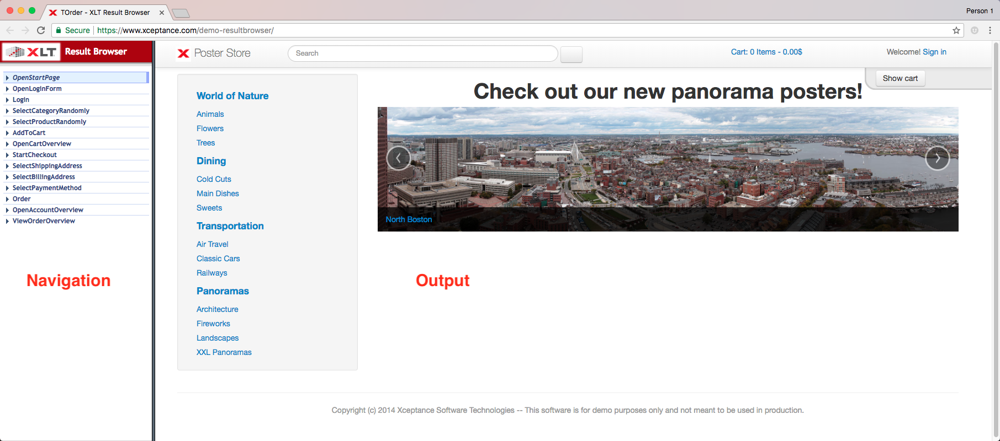
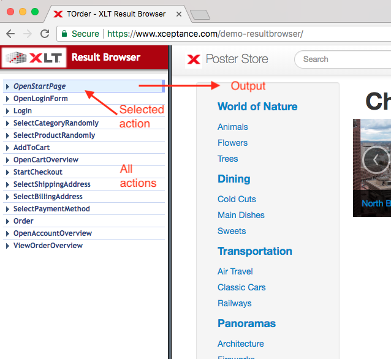
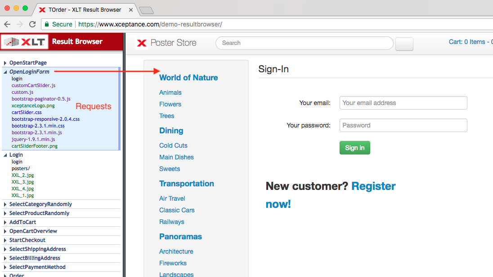
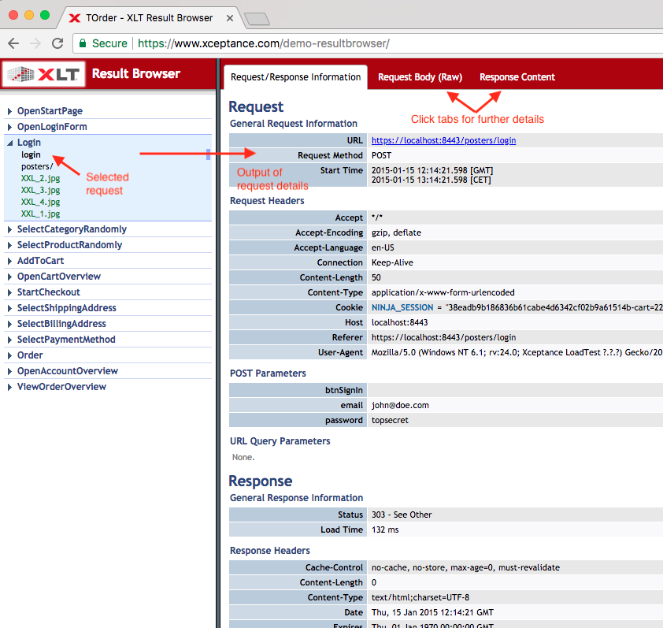
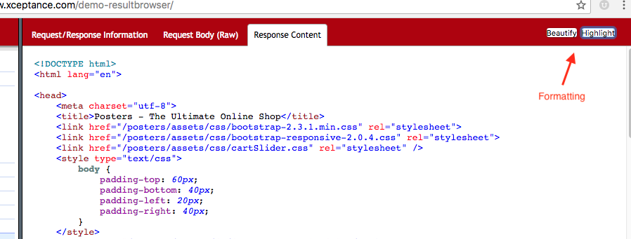
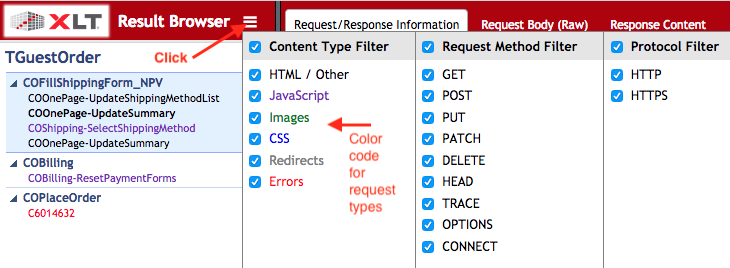
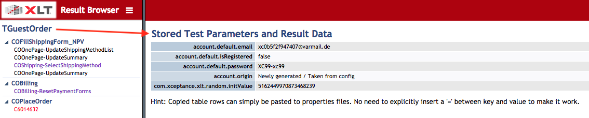
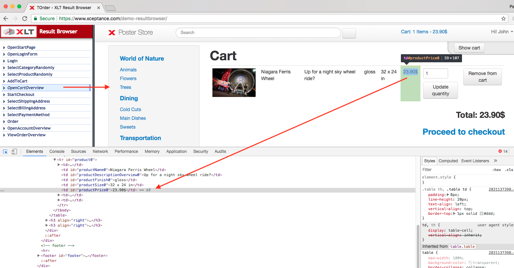

How to use the XLT Result Browser
You can find an example result browser at https://www.xceptance.com/demo-resultbrowser. The example link will illustrate the points described in this how-to and aid in understanding the information presented in an XLT Result Browser. If you have been given an XLT Result Browser link or archive specific to a project, be sure to use this one. In case it is an archive, simply extract the contents and open the contained file index.html in your web browser.
Overview
An XLT Result Browser contains a log of different information, gathered during an execution of a test case. Most importantly XLT Result Browser will store and show all requests fired during the course of a test. Each of the requests is assigned to an individual action (as per test case). An action can be understood as a single user interaction with the site. The following screenshot presents an overview of an XLT Result Browser.

The area on the left-hand side can be used to navigate the ‘steps’ – actions and requests – of your test case. The right side presents the output of your object under test (the site you are testing) or more detailed request information. In above screenshot the object under test is our example site, the poster store. Obviously, the output will differ if you have a result browser for a different site.
Actions
Initially, the list of items on the left-hand side represents the actions. If you single-click one of these actions, you will see the respective state of the site on the right. The currently selected action is marked in light blue. Each action represents a step of the enclosing test case, e.g. ‘open homepage’ or ‘add to cart’. An action represents a distinct user interaction with the site and is typically associated with a page load. The result of the page load is captured in the state shown on the right-hand side
Please note: Output on the right-hand side will more or less closely resemble your webpage. Typically, Javascript is disabled in this view, so the shown page will differ slightly from the original.

Requests
A double-click on an action or a click on the little arrow in front of an action will open a secondary hierarchy containing all requests associated with the enclosing action. To hide the request information, simply click the little action arrow again.

Click directly on a request item to see all details for this request. Details like general information and headers of your request and its response are shown. If existing, all URL query and POST parameters of your request are listed.

Use the tabs at the top of the right-hand side output area to see the (raw) request body and response content. When viewing the response content, you can format the output with the help of the two buttons at the top right.

Furthermore, a Select All button is shown in newer version of the XLT Result Browser, which enables you to easily copy and paste the response content.
Request Color Coding and Filters
In more recent versions of the XLT Result Browser, a small hamburger menu at the top will give you the possibility to filter your output and informs about the color coding of different request types. For example, requests of type Javascript are in purple color, requests which resulted in an error are encoded in red.

Filters are available for content type, request method and employed protocol. To enable or disable a certain filter, simply toggle its checkbox.
Test Case Information
Click on the test case name, i.e. TGuestOrder in below example screenshot, to see additional information about the test case and its parameters. The output shown here is controlled from within an XLT test case.

Element Inspection
Since the right-hand side output of an action represents the associated state of a page, you can use the output to inspect the page elements and their state. Simply use the inspection tool of your browser (e.g. Chrome Developer Tools) or plugin to analyze the page and its elements.
As described earlier, the output of an action shows the state of the page after a user interaction (with all the associated requests) was executed. The page output of an action does not include <script> commands. These have been removed by XLT to avoid script execution while you are reviewing the output in your browser.
